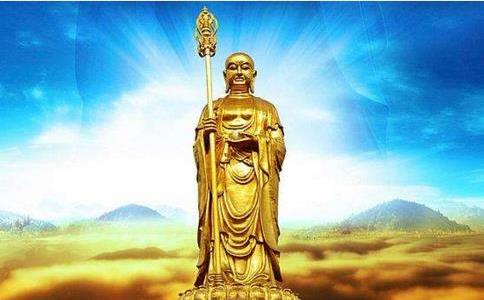

《 过去不可思议阿僧祇劫，时世有佛，号曰：觉华定
是时圣女广设方便，劝诱其母，令生
时婆罗门女，瞻礼尊容，倍生敬仰。私自念言：佛名大觉，具一切智。若在世时，我母死后，傥来问佛，必知处所。时婆罗门女，垂泣良久，瞻恋如来。忽闻空中声曰：泣者圣女，勿至悲哀，我令示汝母之去处。婆罗门女合掌向空，而白空曰：是何神德，宽我忧虑。我自失母以来，昼夜忆恋，无处可问知母生界。时空中有声，再报女曰：我是汝所瞻礼者，过去觉华定自在王如来，见汝忆母，倍于常情众生之分，故来告示。
婆罗门女闻此声已，举身自扑，肢节皆损。左右扶侍，良久方苏。而白空曰：愿佛慈愍，速说我母生界，我今身心，将死不久。时觉华定自在王如来，告圣女曰：汝供养毕，但早返舍，端坐思惟吾之名号，即当知母所生去处。
时婆罗门女寻
时婆罗门女，以
时婆罗门女问鬼王曰：此是何处？
无毒答曰：此是大铁围山西面第一重海。
圣女问曰：我闻铁围之内，地狱在中，是事实否？
无毒答曰：实有地狱。
圣女问曰：我今云何得到狱所？
无毒答曰：若非威神，即须业力，非此二事，终不能到。
圣女又问：此水何缘，而乃涌沸，多诸罪人，及以恶兽？
无毒答曰：此是阎浮提造恶众生，新死之者，经四十九日后，无人继嗣，为作功德，救拔苦难，生时又无善因。当据本业所感地狱，自然先渡此海。海东十万由旬，又有一海，其苦倍此。彼海之东，又有一海，其苦复倍。三业恶因之所招感，共号：业海，其处是也。
圣女又问鬼王无毒曰：地狱何在？
无毒答曰：三海之内，是大地狱，其数百千，各各差别。所谓大者，具有十八。次有五百，苦毒无量。次有千百，亦无量苦。
圣女又问大鬼王曰：我母死来未久，不知魂神当至何趣？
鬼王问圣女曰：菩萨之母，在生习何行业？
圣女答曰：我母邪见，讥毁三宝。设或暂信，旋又不敬。死虽日浅，未知生处。
无毒问曰：菩萨之母，姓氏何等？
圣女答曰：我父我母，俱婆罗门种，父号尸罗善现，母号悦帝利。
无毒合掌启菩萨曰：愿圣者却返本处，无至忧忆悲恋。悦帝利罪女，生天以来，经今三日。云承
鬼王言毕，合掌而退。婆罗门女，寻如梦归。悟此事已，便于觉华定自在王如来塔像之前，立弘誓愿：愿我尽未来劫，应有罪苦众生，广设方便，使令
佛告文殊师利：时鬼王无毒者，当今财首菩萨是。婆罗门女者，即
过去无量阿僧祇劫，有佛出世，名：清净莲华目如来，其佛寿命四十劫。像法之中，有一
罗汉问之：欲愿何等？
光目答曰：我以母亡之日，资福救拔，未知我母生处何趣？
罗汉愍之，为入定观，见光目女母堕在恶趣，受极大苦。罗汉问光目言：汝母在生，作何行业？今在恶趣，受极大苦。
光目答言：我母所习，唯好食啖鱼鳖之属。所食鱼鳖，多食其子，或炒或煮，恣情食啖，计其命数，千万复倍。尊者慈愍，如何哀救？
罗汉愍之，为作方便，劝光目言：汝可志诚念清净莲华目如来，兼塑画形像，存亡获报。
光目闻已，即舍所爱，寻画佛像而供养之，复恭敬心，悲泣瞻礼。忽于夜后，梦见佛身金色晃耀，如须弥山，放大光明。而告光目：汝母不久当生汝家，才觉饥寒，即当言说。
其后家内婢生一子，未满三日，而乃言说。稽首悲泣，告于光目：
光目闻说，知母无疑，哽咽悲啼而白婢子：既是我母，合知本罪，作何行业，堕于恶道。
婢子答言：以杀害，毁骂二业受报。若非蒙福，救拔吾难，以是业故，未合解脱。
光目问言：地狱罪报，其事云何？
婢子答言：罪苦之事，不忍称说，百千岁中，卒白难竟。
光目闻已，啼泪号泣而白空界：愿我之母，永脱地狱，毕十三岁，更无重罪，及历恶道。十方诸佛慈哀愍我，听我为母所发广大誓愿。若得我母永离三途及斯下贱，乃至女人之身永劫不受者。愿我自今日后，对清净莲华目如来像前，却后百千万亿劫中，应有世界，所有地狱及三恶道诸罪苦众生，誓愿救拔，令离地狱恶趣，畜生饿鬼等，如是罪报等人，尽成佛竟，我然后方成正等正觉。
发誓愿已，具闻清净莲华目如来而告之曰：光目，汝大慈愍，善能为母发如是大愿。吾观汝母十三岁毕，舍此报已，生为梵志，寿年百岁。过是报后，当生无忧国土，寿命不可计劫。后成佛果，广度人天，数如恒河沙。
佛告定自在王：尔时罗汉福度光目者，即无尽意菩萨是。光目母者，即解脱菩萨是，光目女者即地藏菩萨是。